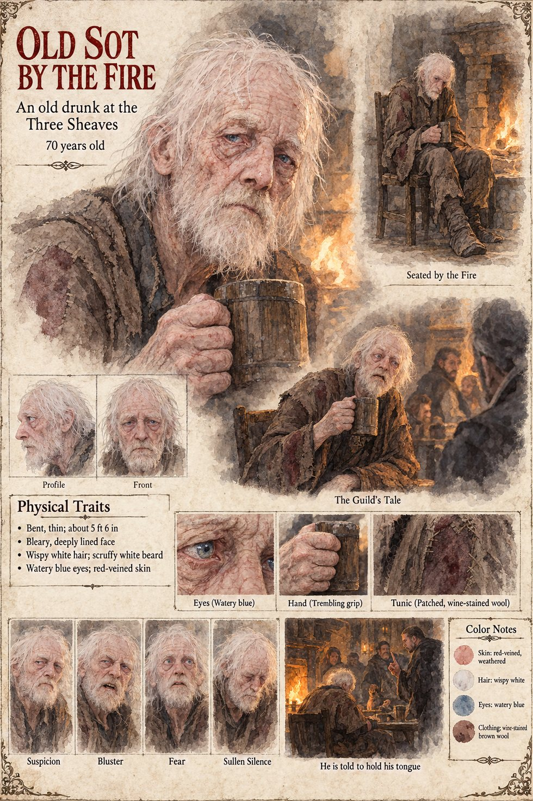

Old Sot by the Fire
An old drunk at the Three Sheaves · unnamed · 70 years old by his sheet
The last voice in the Three Sheaves' catalogue of names in the first winter, and the only one that does not offer a miracle. The room has called the powder the Night-Seed and the Widow's Ashes and the splinter of Solan's own fire; it has called the foreigner the Moon-Man, from the long pale face of him and the way he does not talk, and the name has gone round the room twice and been understood by everyone present to have been always known. An old sot by the fire says that the whole affair was a tale put about by the Guild to explain why it had stopped selling swords, and is told to hold his tongue. The manuscript says no more of him than that, and does not say who told him, or whether he was right.
The manuscript gives him one sentence and no age. The sheet's seventy years, bent thin build of about 5 ft 6 in, bleary deeply lined face, wispy white hair and scruffy beard, watery blue eyes, red-veined skin and patched wine-stained brown wool tunic are its own, with a trembling grip on a wooden tankard. Its panels, Seated by the Fire, The Guild's Tale and He is told to hold his tongue, are the manuscript's sentence drawn at three moments; its expressions run Suspicion, Bluster, Fear and Sullen Silence.
“a tale put about by the Guild to explain why it had stopped selling swords”
Appears In

Related Subjects


Related Records

In the Three Sheaves on a winter night Waldrada wipes a mug behind the bar while the room gives the black salt its names: a barge-hand's Night-Seed, a carter's Widow's Ashes and a journeyman cooper standing on a bench's splinter of Solan's fire, with a carter's wife leaning in, a drover from the north naming the stranger the Moon-Man, and an old sot dozing by the fire.